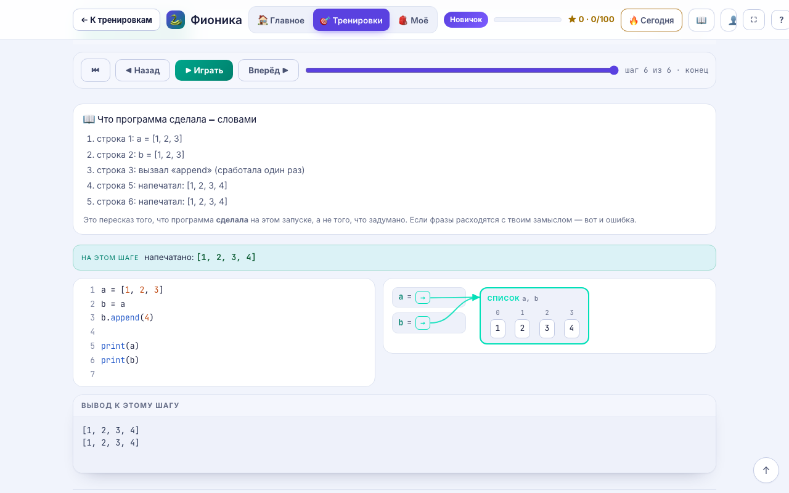
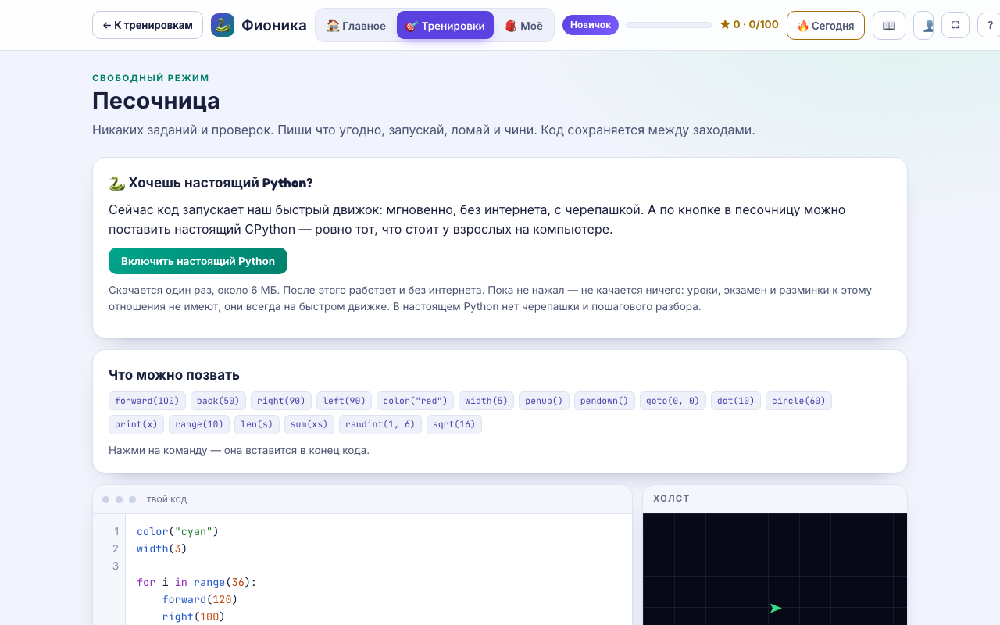

Как занимается ребёнок и что он умеет сам — словами, без знания Python, аккаунтов и звонков.
Не «всё хорошо, мам», а то, что было на самом деле.
Что прошли, где было тяжело, сколько проверок сделала программа и чего не было вовсе.
По дням и часам: когда ребёнок сидел за тренажёром на самом деле, а не когда обещал.
История работы: попытки, черновики, вставки. Не приговор детектора, а повод поговорить.
Если ребёнок застрял на уроке, это видно сразу, первой строкой кабинета.
Спрашиваете вы, а правильные ответы тренажёр считает заранее.
Задачи по нарастающей, без подсказок, где бы ребёнок ни учился. Итог — короткий код, через месяц видно «было → стало».
Вопросы по программе ребёнка: «что напечатает, если заменить число», «сколько раз выполнится цикл». Ответы посчитаны прогоном.
Два-три вопроса по программе, которую ребёнок только что написал, — с готовыми ответами для взрослого.
Курс — это дорога. Вокруг неё — то, ради чего возвращаются.
Свободное поле вне курса: внутри тот самый CPython, что ставят на компьютеры. Код из урока можно унести туда и доломать до своего.
Код, который рисует: круг, поворот — и на экране узор. Первые циклы дети видят, а не представляют.
Короткая разминка перед уроком и игры, у каждой из которых виден код: во что играешь — то и читаешь.
Команды курса открываются поверх любого экрана: забыл, как пишется, — подсмотрел, не уходя из задачи.
Работающую программу тренажёр предлагает написать чище, а трудные уроки сами возвращаются на повторение.
Иконка на домашний экран — и работает без интернета. Ни установки, ни магазина приложений.


Предмет закрывает тренажёр: занятие на 20–45 минут, отчёт взрослому и вопросы ребёнку с готовыми ответами.
10–11 класс, защита весной. Программу пишет школьник, и видно, что он её писал.